MySQL相关读书笔记
Good code is its own best documentation. As you’re about to add a comment, ask yourself, “How can I improve the code so that this comment isn’t needed?”
Steve McConnell
Effective MySQL之SQL语句最优化
MySQL索引
MySQL主要用到的索引数据结构有：
- B-树：B-树
- B+树:B+树
- 散列：散列
- 通信R-树：R-树
- 全文本:全文本
MySQL不同存储引擎数据结构
MyISAM
MyISAM存储引擎使用B-树数据结构来实现主码索引、唯一索引以及非主码索引。
MyISAM索引是在内存的一个公共键缓存中管理的，这个缓存大小可以通过key_buffer_size或者其他命名键缓存来定义。InnoDB
B+树聚簇主码
InnoDB用聚簇主码存储数据，底层信息占用的磁盘空间的大小很大程度上取决于页面的填充因子；所有InnoDB数据和索引都是在内存中通过innodb_buffer_pool_size设置选项定义InnoDB缓冲池进行管理。B-树非主码
非主码索引使用B-树数据结构，与MyISAM区别在于，InnoDB中，非主码索引存储的是主码实际值，而在MyISAM中，非主码索引存储的是包含主码值的数据的指针。内存散列索引
只有MEMORY引擎支持散列的数据结构。MySQL分区
从5.1版本起的ＭｙＳＱＬ开始支持通往范围、列表、散列、键以及散列等对表进行分区。分区的实现对索引的使用和优化有一些帮助。
一个已分区的表不支持全文本索引、空间索引以及外键索引。分区表上的主索引和唯一索引必须包含分区表达式中用到的所有列。
MySQL可以通过控制分区来实现只扫描一些用到的索引，而不是扫描所有索引
MySQL索引创建
创建索引并不是优化SQL语句的唯一方式。选择一种好的方式对数据库模式或者SQL语句中数据的应用程序的用法进行优化，通常可以对系统整体性能产生更加深远的影响。
单列索引
单列索引是最基础的索引，这是一种建立在数据库表中特定列上的索引。MySQL并没有限制在一个表的索引数量，然而创建索引还是会对性能有影响。
创建语法
非主码索引：
1 | ALTER TABLE <table> |
主码索引：
1 | ALTER TABLE <table> |
利用索引限制查询读取的行数
使用索引连接表
关联表键设置索引
理解索引的基数
这里的基数(Cardinality[/ˌkärdəˈnalədē/])数值，如果某个索引的基数越高，反映该列中的唯一值的数量越多，那么越有可能在选用这个索引时以更少的读操作中找到需要的记录。
一个优秀选择性的索引意味着有着更少的相同值的行。
1 | SHOW INDEXES FROM some_key |
使用索引进行模式匹配
【技巧】 如果经常需要一个以通配符开头的查询，常用的方法是在数据库中保持需要查询的值的反序值。例如：
假设查询以.com结尾的电子邮件地址，当搜索email like '%.com'时MySQL不能使用索引；而搜索reverse_email like reverse('%.com')就可以使用定义在reverse_eamil列上的索引。
选择唯一的行
如果想要保证每个艺人都有一个唯一的名字，可以创建唯一的索引。唯一索引有两个目的：
- 提供数据完整性以保证列中任何值都只出现一次
- 告知优化器对给定的记录最多只可能有一行结果返回；这点很重要，因为有了这些信息就可以避免额外的索引扫描
【技巧】 在可以为空的列上定义唯一索引也是可行的。这种情况下，NULL的值被认为是一个未知的值，并且NULL!=NULL。这就是三态逻辑的好处，它避免了使用默认值或者一个空字符串值。
结果排序
使用基于索引的排序方法，可以免去分类的过程
多列索引
创建更好的索引
假设表album中存在下述两个索引：
1 | ALTER TABLE album ADD INDEX m1(country_id, album_type_id); |
争对一个查询SQL EXPLAIN后的结果如下：
建立索引m1之后的：
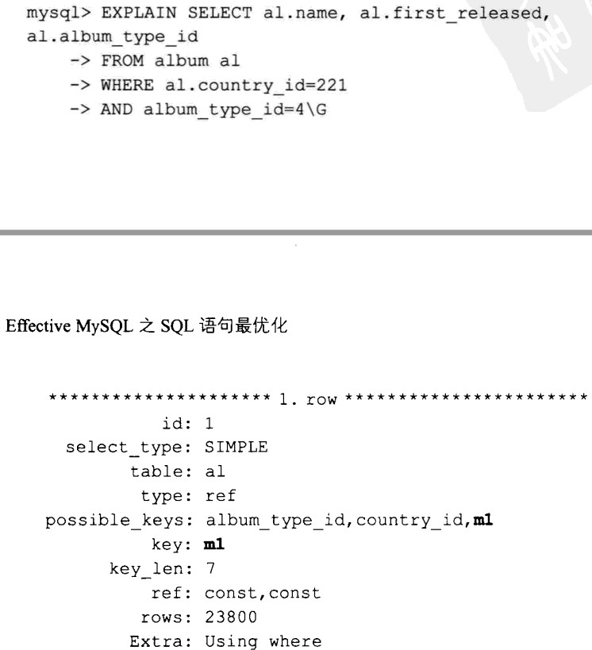
建立索引m2之后的：
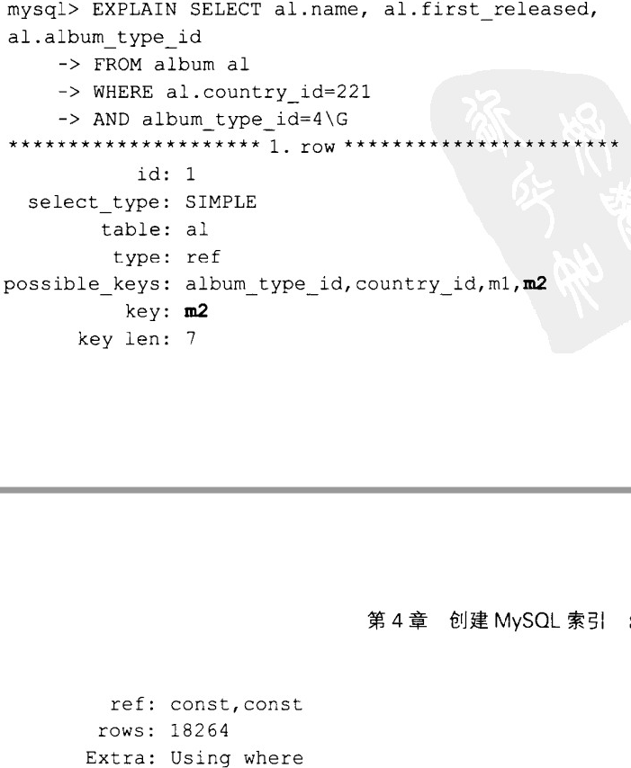
查看所有状态：
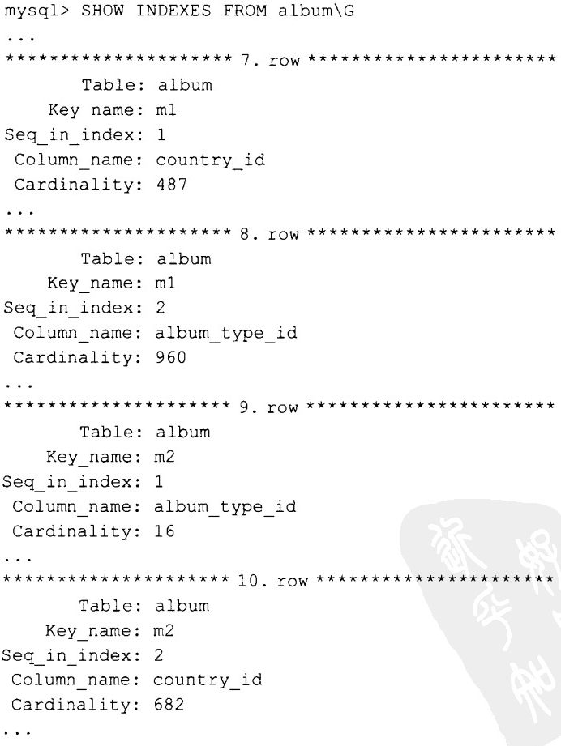
【技巧】 当在对一个交集表使用多列索引时，尤其是在每一列都有指定值时，交换列的顺序可能会创建出更好的索引。
多列索引除了优化限制返回的行之外还有更重要的用途。多列索引中最左边的列也可以被当作单一列索引来高效的使用。当这些列被频繁用于聚合操作（即GROUP BY）和排序操作（即ORDER BY操作）时，最左边的列可能也同样可以显著提升性能。
多列上的索引
索引的行的宽度应该尽可能的短，这样就可以在一个索引数据页面中包含更多的索引记录。这样做的好处是可以读取尽量少的数据，从而快地遍历索引。如果还能保证索引的高效，这样能使系统内存的使用率最大化。EXPLAIN命令结果中的key_len和ref两个属性的值可以用来判断选中的索引的列使用率。
合并WHERE和ORDER BY语句
【技巧】 创建一个能够用于对结果排序时的索引是有难度的；然而在某些频繁地（例如每秒100次）对相同数据进行排序的应用程序中，这样做将会带来很多益处。从使用PROCESSLIST命令查看sorting results的值中，明显可以看出对CPU的影响，以及对一个经过优化的模式和SQL设计的参考方案的强烈需求。
添加索引造成的影响
DML影响
示例中表明，包含更多索引的表中插入数据比原始表中插入慢了4倍。虽然是粗略的测试，但是足够表明在表上添加索引对写操作的性能有直接的影响
重复索引
在众多索引优化技术中，最简单的就是删除重复索引。例如：一个索引与主码或者某些其他索引的子集相匹配。任何包含在其他索引的最左边部分中的索引都属于重复索引，且不会被使用。示例：
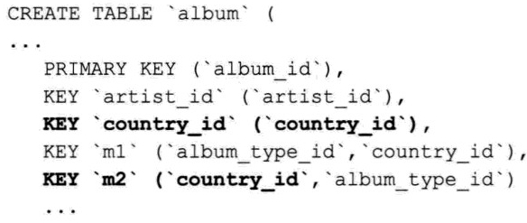
DDL影响
随着表大小的不断增长，对性能的影响也不断加大。根据标准的升级法则，任何DML操作都会导致所有语句被阻塞；档在InnoDB中使用默认的公共表空间配置的时候。MySQL会为你的表创建一份备份。如果表的大小有200GB，那么在执行ALTER TABLE时你需要至少200GB额外的磁盘空间。使用InnoDB时，在执行期间这些额外的磁盘空间会被添加到公共表空间中。这部分磁盘空间在命令完成之后不会被文件系统回收，而是当InnoDB需要额外磁盘空间时在内部被重复利用。
【技巧】 有一些技巧可以让阻塞操作减少到最低限度。你可以选择使用一个高可用性的容错度搞的主表复制技术来支持在线变更表结构。
磁盘空间的影响
使用InnoDB也会对磁盘使用空间产生直接影响，这些影响取决于所选择的主码以及如何使用这些主码。对于非主码索引，总是有一个主码索引附在非主码索引的记录后面。因此对于InnoDB表，一定要在主码中使用尽可能小的数据类型。
页面的填充因子
选择用现实中存在的属性做主码而不是用现实中无意义的编码会对默认页面的填充因子产生直接影响。
非主码索引
InnoDB在非主码索引中使用了主码的值，而不是一个指向主码的指针。在每个索引记录后面都附上了一个可应用的主码的副本。当数据库表有一个长度为40字节的主码，并且你还拥有15个索引时，引入一个更短的主码可以大幅减少索引的空间占用量。这种使用主码的值的实现方式与InnoDB内部的主码散列算法结合使用能够改善性能。
MySQL的限制和不足
基于开销的优化器
指定QEP
索引的统计信息
基于函数的索引
一个表上的多个索引
创建更好的MySQL索引
- 创建覆盖索引
- 创建局部列的索引
更好的索引
合理的调整你的索引对于优化来说是非常重要的，尤其是对于高吞吐量的应用程序。及时对执行时间的改进仅仅是数毫秒，蛋对于一个每秒执行1000次的查询来说这也非常有意义的性能提升。
覆盖索引
示例：针对一个表只有大约500,000行的数据的一个查询。
查询示例：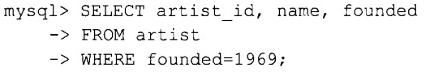
增加一列索引之后：
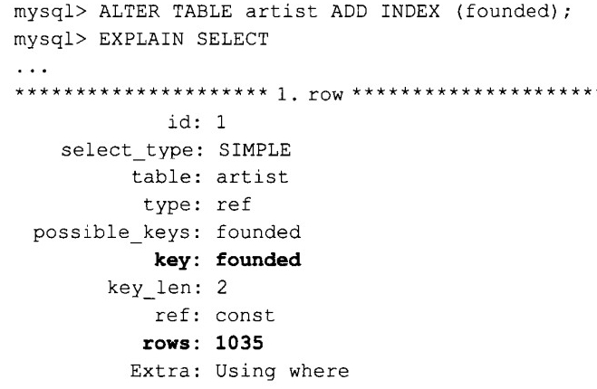
增加覆盖索引之后：
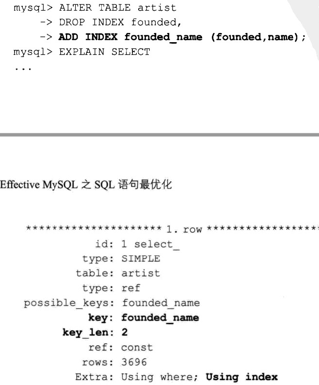
上述QEP在Extra列中显示了Using Index时，这并不意味着在访问底层表数据时使用到了索引，这表示只有这个索引才是满足查询所有需求的。这种索引可以为大型查询或者频繁执行的查询带来显著的性能提升，它被称之为覆盖索引。
【技巧】 有很多理由可以说服用户不要在SQL查询中使用SELECT *。如果在select语句中只包含那些真正需要的列，就能通过创建合适的索引来获得更好的SQL优化。
【警告】 创建这些索引只是用来描述确认覆盖索引的过程，但在生产环境中它们可能并不是理想的索引。有余数据集大小有限，我们在这些例子中使用了一个长字符列。随着数据容量的增加，尤其是超过内存和磁盘最大容量的时候，为一个大型列创建索引可能会对系统整体性能有影响。覆盖索引对于那些使用了很多较小长度的主码和外键约束的大型规范化模式来说是理想的优化方式。
局部索引
示例：
1 | ALETER TABLE album |
创建一个更小的索引意味着更少的磁盘IO开销，而这又意味着能更快地访问到需要访问的行，尤其是当磁盘上的索引和数据列远大于可用的系统内存时。这样获得的性能改进将会超过一个非唯一的并且拥有低基数的索引带来的影响。
MySQL配置选项
- 内存相关的系统变量
- 日志和工具系统变量
- 各种查询相关的系统变量
内存相关的系统变量
全局内存缓冲区
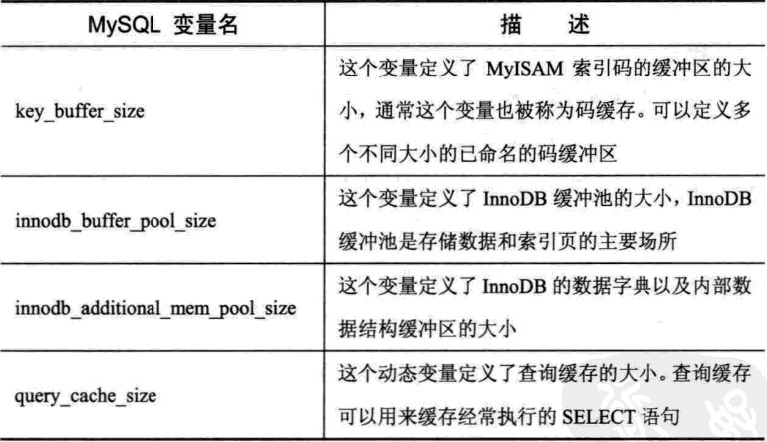
全局/会话内存缓冲区
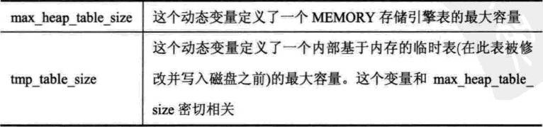
会话缓冲区
【警告】 这4个缓冲区是以每个线程为基础定义的。在MySQL 5.1以及更高的版本中，sort_buffer_size缓冲区的默认值可以在128K/256K~2M之间变化。如果一个缓冲区的大小定义为10M或者100M的话，就会对查询和系统性能产线相反的影响。在没有证据能证明性能提升的情况下，最好的方法时恢复这4个变量的默认值来保证总体内存利用率最大。
SQL的生命周期
优化SQL语句的生命周期涉及6个独立的部分，这包括如何截取SQL语句、识别有问题的SQL语句以及在开始分析前如何确认SQL语句。
- 截取SQL语句
- 识别并分类有问题的SQL语句
- 确认SQL语句的当前操作
- 分析SQL语句和辅助信息
- 优化SQL语句
- 验证SQL优化的结果
截取SQL语句
可以通过一个采样过程来收集所有执行过语句的一部分；或者也可以通过详细收集进程收集一段时间内所有执行过的语句。下面列出的是MySQL中各种流行的SQL语句截取技术：
- 全面查询日志
- 慢查询日志
- 二进制查询
- 进程列表
- 引擎状态
- MySQL连接器
- 应用程序代码
- INFORMATION_SCHEMA
- PERFORMANCE_SCHEMA
- SQL语句统计信息插件
- MySQL代理
- TCP/IP
这里并没有列出所有可能的SQL截取技术。全面查询日志
MySQL全面查询日志允许你截取所有在这个数据库实例上运行的SQL语句。从5.1版本开始，可以配置这个日志输出到文件或者数据库表中。全面查询日志功能，只有启用或者禁用两种状态，没有其他控制粒度。1
2
3
4[mysqld]
general_log=1
general_log_file=/path/to/file
log_output=FILE
【注意】 全面查询日志很适合提供所有连续的SQL查询语句顺序，但他并不提供执行时间。在开发环境或者小容量数据的测试环境中启用全面日志功能是不错的审查SQL语句的方式，但永远不要在生产环境中启用这个功能。
慢查询日志
MySQL的慢查询日志用于提供那些在指令数据库实例上执行时间超过一定限制的那些查询。
1 | [mysqld] |
可以通过SLEEP()出来方便的测试慢查询日志的有效性，这个函数也支持毫秒单位。
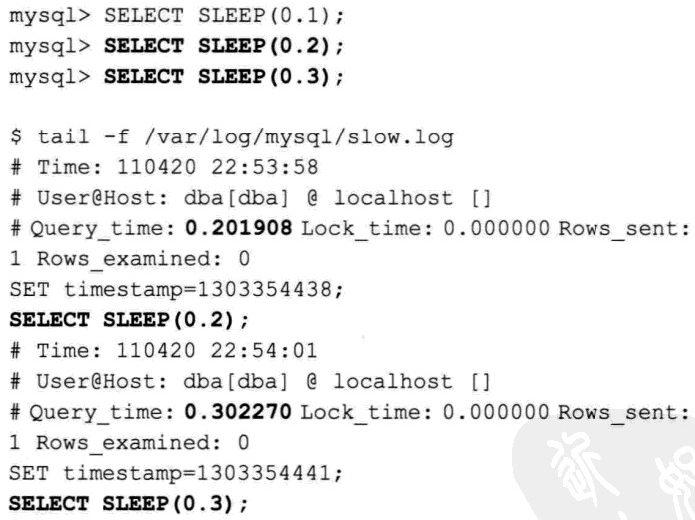
从结果中可以看到，第一个SELECT SLEEP(0.1)语句没有被记录在慢查询日志中，因为他的执行时间小于long_query_time的阀值。
二进制日志
MySQL的二进制日志涵盖了所有非SELECT语句，其中包括DML和DDL语句。这个日志功能可以来提供表级别粒度的语句容量的历史分析。UPDATE和DELETE语句的截取内容能够揭示出潜在的可优化索引。二进制日志功能可以通过下面的MySQL配置命令来启用：
1 | [mysqld] |
MySQL提供了mysqlbinlog命令来创建MySQL二进制日志中信息的纯文本版本。生成的输出结果包含很多额外的文本信息，如果只关注DML语句的话，这些信息可以忽略。
进程列表
这个样例进程可以找出当前运行的这些时间很长的或者常用的查询。另外，这个命令还可以提供一些执行SQL语句的内部步骤信息。他还是一个找出执行时间很长从而阻塞了其他SQL语句的DML语句的简单方法。
以上可以通过State的值为Locked来判断
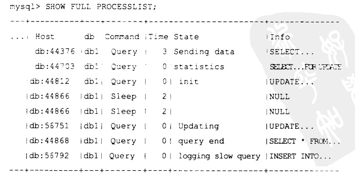
你也可以通过命令行工具mysqladmin来获得进程列表的信息，语法如下：
1 | mysqladmin -uroot -p [-v] processlist |
使用如下的SQL语句同样可以从INFORMATION_SCHEMA(从5.1版本开始)中获得这些信息：
1 | mysql> SELECT * FROM INFORMATION_SCHEMA.PROCESSLIST; |
引擎状态
存储引擎持有的SHOW ENGINE[引擎]STATUS命令提供一些额外的SQL信息。默认包含的MySQL存储引擎中，使用这个命令的是InnoDB。这不是一个理想的SQL语句来源，因为它主要展现其他系统的特性；但出于完整性考虑，还是要有这个功能，因为这是展示出由于某类错误而执行的SQL语句的唯一途径。SHOW ENGINE INNODB STATUS命令可以提供SQL语句的详细信息，包括那些运行的SQL语句以及那些导致外键验证失败或者造成死锁的SQL语句。请看下面示例：
MySQL连接器
很多种类的MySQL连接器提供了截取SQL语句的简便方法，例如：Connector/J
可以参考以下Connector/J数据源配置的属性：
- logSlowQueries
- slowQueryThresholdMillis
- useNanosForElaspsedTime
- slowQueryThresholdNanos
- autoSlowLog
应用程序代码
在你的应用程序代码中使用抽象类来实现所有数据库的访问是一种理想的截取详细SQL信息的方式，可以截取他的信息包括实际的SQL语句、查询的执行时间以及SQL语句的执行顺序。
识别有问题的语句
从上一步截取下来的SQL语句中找到有问题的语句，也是有优先级顺序的。关注运行最慢的SQL查询并不是SQL语句优化的唯一技术要求。**优化执行频率高的语句，同样能够显著改进系统性能。一条每秒执行成百上千次的查询，获得10毫秒的速度提升带来的益处远远大于一条每秒仅仅执行几次的查询，得到1秒的速度，提升的好处。**
【注意】 频繁执行且速度很快的SQL语句通常被认为不是必须要调整的。但提升这些查询的速度，能够为系统资源带来非常大的益处，这些资源使得你的数据库系统能够处理更多的SQL语句。
识别的过程可以用流水线的方式进行，通过在SQL语句中添加C语言风格的注释来实现。请看下面的示例：
1 | SELECT /* 5m cache */ ... |
该技术再识别那些，原本就需要很长的运行时间并且定位和分类的优先级要求都比较低的查询时很有用。例如，在一个集合了线程事务处理(OLTP)、批处理、报表以及缓存查询功能与一生的应用程序中，找到那些重要但第一优先级的，且运行时间长的SQL语句，能够为我们指出其他语句，应该被优先审查和优化。
慢查询日志分析
通过一些第三方开源工具，分析慢查询日志
确认语句执行
在确认sql语句的精确返回时间时应该考虑到因素包括：当前系统的负载、查询并发程度、网络开销、MySQL查询缓存以及否在内存内部访问必要的表索引和数据。
环境
你的最终目标是使用一种可以重现的方式来确认你发现的SQL语句。这种情况将允许你为后面的优化重现这些信息。
时间统计
启用会话时SHOW PROFILES命令后可以提供SQL语句的微秒级别粒度。一个定义良好且在SQL性能方面很积极的基础架构能够主动收集很多信息，不仅仅包括SQL语句、QEP、查询执行时间，还包括很多其他的查询细节，例如获取到的行数、结果集大小、底层有代表性的表数据大小及查询分析中用到的MySQL配置信息。
语句分析
相关命令和工具来分析SQL语句
语句优化
一种是通过索引来优化SQL语句的过程，其他优化sql语句的技术也可以提供更好的性能改进，包括通过去除连接操作或减少列的数目来简化SQL语句，还有精简数据类型和约束条件（比如是否可以为空）来改进表的结构。
结果验证
性能优化之隐藏秘籍
有多种技术可以用于简化或者减少SQL语句，从而对性能和吞吐量提升带来立竿见影的效果。
- 去除重复的索引
- 找到没有被使用或者无效的索引
- 改进索引
- 减少SQL语句
- 简化SQL语句
- 缓存选项
索引优化管理
索引的管理过程，即索引创建和维护的方式，能够影响到SQL语句的性能。
整合DDL语句
把多条ALERT语句整合成一条SQL语句是一种简单的优化改进。
去除重复索引
重复索引主要有两个影响：第一，所有DML语句都会运行的很慢，需要做更多工作来保持数据和索引的一致性；第二，数据库的磁盘占用量将会更大，这将导致备份和恢复需要的时间增加。其简单的情况会导致索引重复。MySQL不要求主码所在的列也被索引。
删除不用的索引
除了重复索引没有被用到之外，还有其他索引可能也没有被用到。这些索引和重复索引一样会影响性的。
监控无效的索引
当定义多列索引时，一定要注意确定所指定的每一列是否真的有效。可以通过分析指定表上的所有SQL语句的key_len列找到那些可能包含没有使用到的列的索引。
索引列的改进
除了创建新的索引来改进查询性能之外，还可以通过其他模式优化的方法来改进数据库的性能，包括使用特定的数据类型以及/或者列的类型。这样做的好处是可以使用更小的磁盘空间，从而减少了IO的开销，且使得更多的索引数据可以被打包装载进入可用的系统内存中。
数据类型
有几种数据类型可以被替换或修改的，而且这样做几乎不会对已有的模式造成任何影响。
BIGINT和INT
当一个主码被定义为BIGINT AUTO_INCREMENT数据类型时，一般来说不需要搞清楚这个数据类型存在的原因。
【技巧】 在AUTO_INCREMENT列上把数据类型从BIGINT改成INT UNSIGNED是最有效的模式改进方法之一，尤其是对那些只有有限的内存同时具有高度规范化的数据模型的数据库服务器。
DATETIME和TIMESTAMP
如果所存储的只是只是一个纪元值，那么一个TIMESTAMP列支持所有必须的值。一个DATETIME列支持所有可能的日期/时间的值。一个DATETIME数据类型占用8字节，而一个TIMESTAMP类型占用4字节。
ENUM
MySQL提供了ENUM数据类型，这个类型适合存储静态的代码值。例如，当然要记录性别的值时，可以选择以下方法中的任意一种来定义：
1 | gender1 VARCHAR(6) NOT NULL |
使用ENUM数据类型有3个优点：
- 一个ENUM列利用隐含的检查限制，提供了额外的数据完整性支持
- 一个ENUM列仅使用1字节来存储255个不同的值
- ENUM列的值更具有可读性。例如，如果你有一个状态字段，使用ENUM类型会使数据容量更加紧凑，并且为每一列的值提供更有意义的说明。
NULL和NOT NULL
除非你确定一个列能包含一个未知的值（一个NULL值），否则最好把这一列定义为NOT NULL。
隐含的变换
当你为表连接选择一个索引数据类型时，一定要确保这个数据类型是相同的。隐含的类型转换将带来不必要的开销。对于整数类型的列，要确保SIGNED和UNSIGNED类型是统一的。对于可变的数据类型，会出现字符集和“逻辑与”运算的复杂情况。当为表连接定义索引列时，要确保这些都匹配。这里经常出现在LATIN1和UTF8字符集之间的隐含转换的问题。
列的类型
有几种数据类型发现广泛的用在一些并不高效的列类型中。这些列的数据类型能够带来更高效的存储，尤其是当这些列属于某个索引时。下面就是一些常见的示例：
IP地址
一个IPv4地址可以被定义成INT UNSIGNED数据类型，只占用4字节。通常情况下将列定义为VARCHAR(15)，这样平均要占用12字节。INET_ATON()和INET_NTOA()函数可以管理IP地址在字符串和数字值之间的转换。
MD5
用CHAR(32)来存储MD5值是一个常见的技巧。如果你的应用程序使用VARCHAR(32)，则对每个值的字符串长度都要花费额外的不必要的开销。这个16进制的值可以使用UNHEX()和HEX()函数来存储在BINARY(16)数据类型中且更为高效。用这种转换可以让每行占用的存储空间从32字节减少到16字节。
其他SQL优化
添加索引能够带来显著的性能提升。然而，对关系型数据库来说，最有效的SQL优化方法是完全删除不需要执行的SQL语句。对于一个高度优化的应用程序来说，占总执行时间最大比重的是网络开销。去除sql语句能够减少应用程序的处理时间。对于sql语句来说，其他必要的步骤还包括解析语句、安全许可检查以及生成查询执行计划。如果其中有不必要的语句，那么这些都会为数据库服务器不必要的负担。可以使用分析功能，在查询执行过程中获得这些步骤的详细时间统计。请看下面的例子：
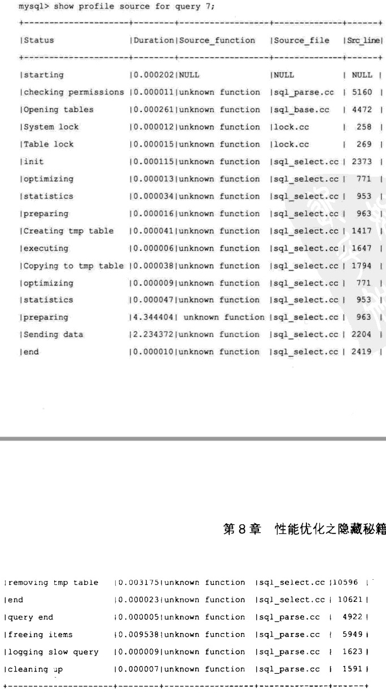
减少SQL语句
有一些简单的技巧可以用来减少SQL语句：
- 删除内容重复的SQL语句
- 删除重复执行的SQL语句
- 删除不必要的SQL语句
- 缓存SQL语句的返回结果
删除内容重复的SQL语句
指定函数或者进程的所有SQL语句的结果表明那些为了完成一个特定请求而重复执行的SQL语句。最好的做法是在开发环境中启用全面查询日志。
删除重复执行的SQL语句
很多应用程序遇到过每次一行(Row At a Time, RAT)的处理方式，这个问题也被叫做N+1问题，导致这个问题的原因是外层循环为每一行都生成一个SQL语句。这会导致成百上千的重复执行SQL语句。
通常情况下，用一条SQL语句来实现每次一块(Chunk At a Time, CAT)的处理方式能够减少重复SQL语句。使用SQL的强项-集合处理能力可以有效的改善性能。
删除不必要的SQL语句
随着时间的推移，应用程序会不断修改和增加功能，这可能产生不必要的SQL语句，例如：
- 不再需要的选择信息
- 仅仅在给定函数的某些路径上用到的选择信息
- 可以从之前的SQL语句中选择的信息
应用程序的功能模块在时间推移的过程中很容易遇到这些问题。
缓存SQL结果
当普通数据的变化率相对较低时，缓存SQL结果够为你的应用程序带来性能提升和对数据库服务器的可扩展性。
MySQL缓存
MySQL查询缓存能够为毒操作频繁的环境带来性能提升，且在不需要其他应用程序开销的情况下就可以实现。
应用程序缓存
在应用程序级别添加缓存，能够大幅减少不必要的SQL语句的执行。
简化SQL语句
当进一步减少SQL语句已无可能时，还可以简化SQL语句。简化语句时需要考虑以下问题：
- 查询中所有的列都是必须的吗？
- 表的连接操作能被省去吗？
- 在给定的函数中，连接或WHERE条件限制的对其他SQL语句是必要的吗？
改进列
改进的过程一个重要要求就是按顺序截取指定函数中的所有SQL语句。
改进连接操作

重写子查询
在某些环境下，查询的性能比直接使用一般的表连接要慢的多。请看下面的示例：
1 | SELECT id,label |
这条SQL语句能够简单的重写成以下语句:
1 | SELECT o.id,o.label |
理解试图(views)所带来的影响
开发人员应该知道SQL语句中所使用的表的真正类别。如果这个对象实际上是一个视图，那么SQL优化的影响将会被试图定义的连接条件的复杂性掩盖。
使用MySQL的复制功能
在多台服务器中可以使用MySQL的附属扩展节点(slaves)来增强读扩展性。这个原理在对读操作要求很高的应用程序中是很常见的。
MySQL EXPLAIN命令详解
语法
1 | mysql> EXPLAIN [EXTENDED | PARTITIONS] |
例如：
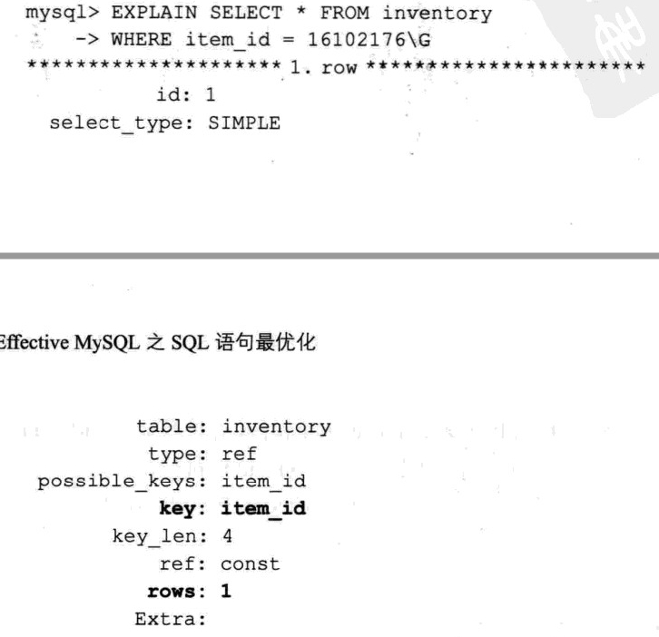
QEP中每个行的所有列表如下所示：
- id
- select_type
- table
- partitions(这一列只有在EXPLAIN PARTITIONS语法中才会出现)
- possible_keys
- key
- key_len
- ref
- rows
- filtered(这一列只有在EXPLAIN PARTITIONS语法中才会出现)
- Extra
key
key列指出优化器选择使用的索引。一般来说SQL查询中的每个表都仅使用一个索引。也存在索引合并的少数例外情况，如给定表上用到了两个或者更多索引。
rows
rows提供了试图分析所有存在于累计结果集中的行数目的MySQL优化器估值。QEP很容易描述这个很困难的统计量。查询中总的读操作数量是基于合并之前的每一行的rows值的连续累积而得出的。
possible_keys
possible_keys列指出优化器为查询选定的索引。一个会列出大量可能的索引（例如多于3个）的QEP意味着备选索引数量太多了，同时也可能提示存在一个无效的单列索引。
key_len
key_len列定义列用于SQL语句连接条的键的长度。此列值对于确认索引的有效性以及多列索引中用到的列的数目很重要。例如：
1 | key_len: 4 // INT NOT NULL |
从这些事例中可以看出，是否可以为空、可变长度的列以及字符集都会影响到表索引的内部内存大小。
table
table列是EXPLAIN命令输出结果中的一个单独行的唯一标识符。
select_type
select_type列提供了各种表示table列引用的使用方式的类型。最常见的值包括SIMPLE、PRIMARY、DERIVED和UNION。
SIMPLE
对于不包含此查询和其他复杂语法的简单查询，这是一个常见的类型。
PRIMARY
这是为更复杂的查询而创建的首要表（也就是最外层的表）。这个类型通常可以在DERIVED和UNION类型混合使用时见到。
DERIVED
当一个表是一个物理表时，那么就被叫做DERIVED。
DEPENDENT SUBQUERY
这个select-type值是为使用子查询而定义的。下面的SQL语句提供列这个值：
1 | EXPLAIN SELECT p.* |
UNION
这个UNION语句其中的一个SQL元素。
UNION RESULT
这是一系列定义在UNION语句中的表的返回结果。当select_type为这个值时，经常可以看到table的值是<unionN,M>,这说明匹配的id行是这个集合的一部分。
partitions
partitions列代表给定表所使用的分区。
Extra
Extra列提供列有关不同种类的MySQL优化器路径的一系列额外信息。
Using where
这个值表示查询使用了where语句来处理结果，例如：之前全表扫描。如果引用到了索引，那么行的限制条件是通过获取必要的数据之后，处理读缓冲区来实现的。
Using temporary
这个只是表示使用了内部临时(基于内存的)表。一个查询可能用到多个临时表。有很多原因会导致MySQL在执行查询期间创建临时表。两个常见的原因是来自不同表的列上使用的DISTINCT，或者使用了不同的ORDER BY和GROUP BY列。
Using filesort
这是ORDER BY语句的结果。这可能是一个CPU密集型的过程。
Using index
这个只是重点强调了只需要使用，所以就可以满足查询表的要求，不需要直接访问数据表。
Using join buffer
这个值强调了在获取连接条件时没有索引，并且需要连接缓冲区来存储中间结果。如果出现了这个值，那应该注意，根据查询的具体情况，可能需要添加索引来改进性能。
Impossible where
这个值强调了where语句会导致没有符合条件的行。请看下面的示例：
1 | EXPLAIN SELECT * FROM user WHERE 1=2; |
Select tables optimized away
这个值意味着仅通过使用索引，优化器可能仅从聚合函数结果中返回一行。请看下面示例：
1 | EXPALIN SELECT COUNT(*) |
Distinct
这个值意味着MySQL在找到第1个匹配的行之后就会停止搜索其他行。
Index merges
当MySQL决定要在一个给定的表上使用超过一个索引的时候，就会出现以下格式中的一个，详细说明使用索引以及合并的类型：
- Using sort_union(…)
- Using union(…)
- Using intersect(…)
id
id列是在QEP中展示的表的连续引用。
ref
ref列可以被用来标识那些来进行索引比较的列或者常量。
fitered
fitered列给出了一个百分比的值，这个百分比值和rows列的值一起使用，可以估计出那些将要和QEP中的前一个表进行连接的行的数目。前一个表就是指id列的值你当前表的id小的表。
type
type列代表QEP中指的表使用的连接方式。下面是最常用的几种连接方式：
- const 当这个表最多只有一行匹配的行时出现
- system 这是const的特例，当表只有一个row时会出现
- eq_ref 这个只表示有一行是为了每个之前确定的表而读取的
- ref 这个值表示所有具备匹配的索引值的行都被用到
- range 这个值表示所有符合一定给定范围值的索引行都被用到。
- ALL 这个只表示需要一次全表扫描
其他类型的值还有fulltext、ref_or_null、index_merge、unique_subquery、index_subquery以及index。